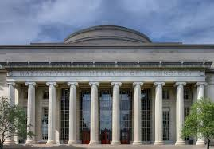

À Propos du MIT
PRÉSENTATION
Le Bureau des études supérieures (OGE) fournit un certain nombre de services aux étudiants diplômés actuels et potentiels ainsi qu'aux départements, notamment le soutien et le développement des étudiants; diversité et développement de la communauté; des conseils sur les bourses et le bien-être financier; surveillance des politiques et des procédures; et le soutien aux admissions aux cycles supérieurs et au Conseil des étudiants diplômés.
Dans l'ensemble de notre travail, nous favorisons l'excellence académique et la qualité de vie de la communauté des étudiants diplômés du MIT. Les administrateurs départementaux diplômés sont des partenaires clés et une ressource importante pour les étudiants et le personnel.
Notre mission
L'Office of Graduate Education (OGE) soutient et sert les étudiants diplômés, les programmes et les écoles afin de rendre les études supérieures au MIT responsabilisantes, passionnantes, holistiques et transformatrices.
Notre vision
Nous envisageons une communauté d'universitaires diplômés dont les membres sont toujours plus engagés intellectuellement et socialement, valorisés, interactifs et rapidement connectés aux ressources, à l'information, les uns aux autres, à l'Institut, à la nation et au monde.
Nos valeurs
Le Bureau des études supérieures défend les valeurs de l'Institut, notamment l'égalitarisme, la collaboration, la communauté et le fait de faire la différence. L'OGE est particulièrement engagé à favoriser l'excellence et la qualité à travers les valeurs de dévouement au service des étudiants, de souci de tous les membres de la communauté et d'inclusion de divers horizons et perspectives.